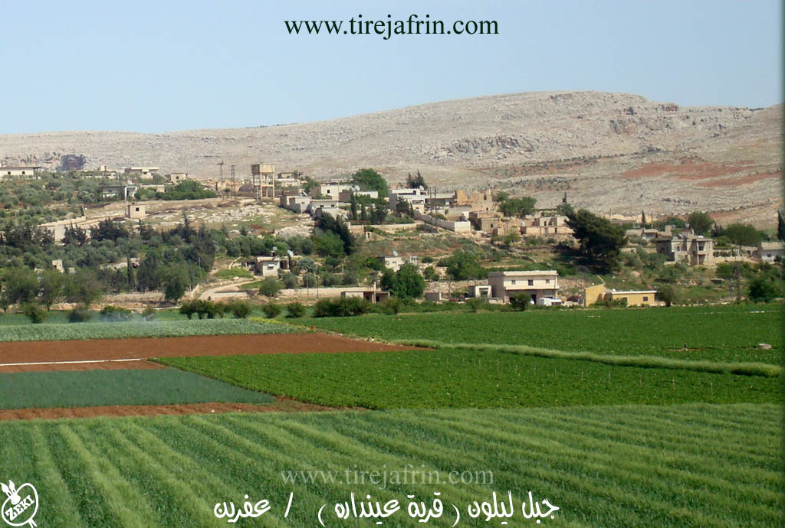
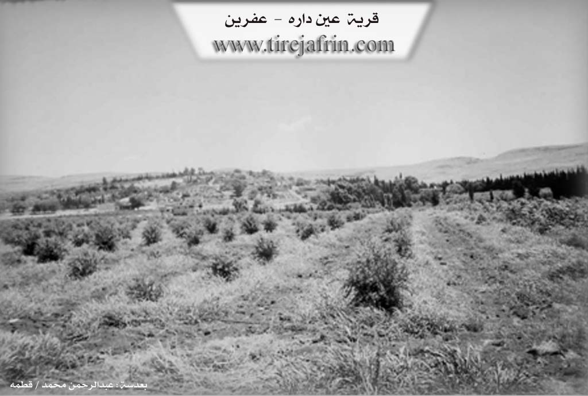

General Information
Nahiya (Subdistrict)
Efrîn
Also Known As
عين دارة, Ein Dara, Ayn, Ain Dara, عيندارة
Tribes
Kilepçekî
Families, Clans, etc.
Mala Belaliya, Mala Bêrem, Mala Hemîdê, Mala Mehemedê Şêx Xezê, Mala Qeydî, Molê Reşîdê Hemêdê Hemê
Photos



Basic Information about Endarê
Source: Afrin 366
Ruins: Kelha Basûtê
Other Landmarks: Aviyona, Berê Serê Solê, Hisênmiderî
Source: Khalil Sino
Etymology: Named after the archaeological hill Tilya Andarê located nearby
Foundation Date/Period: modern settlement expanded approx 70 to 80 years ago
Hills: Tilya Andarê, Girê Andarê
Ruins: Asar Til Andara
Wells: Bîra Tilya Andarê
Other Landmarks: Cebel Ehlem, Çemê Efrînê
Summaries
I. Summary from TirejAfrin Site (English) of Endarê
Endar Village Entry
The following is stated in the book Çiyayê Kurmênc (Efrîn): A Geographical Study by Dr. Mihemed Ebdo Elî:
Endar / Endarê (601 inhabitants - 330 hectares/AH - 6km - 255m):
Etymology:
"Ain" means spring (a word of Arabic origin), and "Dar" means tree in Kurdish. The full meaning of the name is "Spring of the Tree" (Kaniya Daran). The location is densely wooded, especially with willow trees. The spring might also have a connection to the name of the Iranian King "Darius." However, Khoury Barsoum states: It is from Syriac, meaning "Spring of the houses and dwellings," and it might be related to war and fighting (Page 242).
Location and History:
It is a small village located at the end of the southwestern slope of a limestone plateau. An archaeological tell (hill) is located 800m to the west of it. Upon this hill is a famous temple from the Hittite era, as well as traces of habitation from various eras; ancient pottery shards are scattered on its surface. To the south of the tell, there are ruins of an agricultural village from the Neolithic age dating back ten thousand years. There is a factory for manufacturing plastic irrigation pipes in the village.
The Spring of Endarê:
Its flow rate was 129 liters/second. A small lake forms at its source, from which water drains via a channel heading southwest, passing beside the archaeological hill, and finally ending in the river of Efrîn at a distance of 1km. In the sixties and seventies of the last century, the lake and its channel were famous and well-known for their abundant fish.
The Archaeological Tell:
Located on the eastern bank of the river of Efrîn, 800m west of the village. It rises 40m above the surrounding area. The tell consists of two parts:
The First Part: Rises slightly above the course of the river of Efrîn. Its length is 280m and its width is 180m. Excavation works revealed traces of habitation dating back to the second millennium BC and the first millennium AD; it was a flourishing city at that time.
The Second Part: This is higher in elevation than the first part and has a conical shape. Excavation works revealed traces of successive civilizations: Hittite, Iranian (Zoroastrian), Greek, Byzantine, and then Islamic. It is considered an open-air museum of antiquities.
The following is stated in the book Efrîn... Her River and Her Green Hills by the writer Ebdulrehman Mihemed from the village of Qetme:
Endarê:
A village in the valley of Efrîn, administratively following the villages of the Efrîn center sub-district, Heleb governorate.
It is a small village located at the end of the southwestern slope of a limestone plateau, at its contact point with the plain of the Efrîn river valley, between Çiyayê Lêlûn to the east and the Efrîn river valley to the west. It is 6km south of the river of Efrîn.
To the west of the village, there is a spring bearing its name, which forms a natural lake surrounded by a belt of various natural trees. In front of it lies a vast, agriculturally fertile plain. It is bordered to the north by a wide plain and the nearby village of Tirinde; to the south by a fertile agricultural plain planted with pomegranate and apple trees and the touristic town of Basûtê; to the west by a plain, the spring called Kaniya Endarê, the archaeological tell, the river of Efrîn, and the village of Cudêdê / Kersantaş; and to the east by a mountain range, the village of Qerzîhel, and the western chain of Çiyayê Lêlûn and Çiyayê Seman.
The number of its houses is about 45, and the age of the village is approximately 400 years. Its old houses are made of wood and stone with mud roofs, while modern construction is of stone and reinforced concrete. To the east of the village lies a spring after which the village was named (Endarê). The area has ancient buildings, evidenced by the presence of an archaeological tell 800m to the southwest of the village, where a Hittite temple and ruins from the Islamic era were found, with pottery shards scattered on its surface.
The village has an electricity network, drinking water from the Endarê spring, a primary school, and a paved road passing through its center to the village of Basûtê and neighboring villages. There is also a telephone center and an agricultural guidance center. Its residents work in the cultivation of grains, cotton, and irrigated olives using the Endarê spring and the river of Efrîn. A section of the residents works in tourism businesses due to the presence of the lake on the western side of the village.
The Spring:
Located on the western slope of the village near the public Riya Heleb-Efrîn (Aleppo-Afrin road). Its flow is 129 liters/second. At the water outlet, it forms a small lake from which water flows westward to irrigate the orchards and pours into the river of Efrîn. Recreational touristic cafes are established on the borders of the lake.
The village of Endarê is one of the ancient villages in the region, revealed by ruins of successive civilizations from the Aramean, Greek, and Byzantine, to the Arab Islamic era. The most important of these archaeological remnants is the Byzantine wall built on the ruins of an ancient Greek wall, and the massive temple dating back to the first millennium.
Kaniya Endarê (Spring of Endarê):
A water spring in the village of Endarê, sub-district of the villages of the Efrîn center and region, Heleb governorate. It is located at the end of the western slope of Çiyayê Lêlûn and Çiyayê Seman, near the village, and is 5km south of the city of Efrîn. Its flow is 129 L/s. At its outlet, it forms a small lake from which water drains via a channel heading southwest, irrigating the village orchards, then ending in the valley of the river of Efrîn at a distance of 1km. A structure was built on it to preserve and collect the water, pumping it through water networks to the village itself and to the villages of Basûtê and Zerîfê. A cafe was also established on the edge of the lake, frequented by residents of the cities of Heleb and Efrîn and neighboring areas. The road to it from Efrîn is paved.
Village Mukhtar: Ebdulrehman Reşîd
Sources:
- Book: جبل الكرد (عفرين) دراسة جغرافية Çiyayê Kurmênc (Efrîn): A Geographical Study by د. محمد عبدو علي Dr. Mihemed Ebdo Elî.
- Book: عفرين .... نهرها وروابيها الخضراء Efrîn... Her River and Her Green Hills by عبدالرحمن محمد Ebdulrehman Mihemed from the village of Qetme.
Preparation and Execution:
- Manager of Navenda Tirej Efrîn: Ebdulrehman Hacî Osman
- 20/12/2013
II. Summary of Endarê from Afrin 366
Source: https://www.youtube.com/watch?v=sgK4MxSjWUo
The documentary focuses on the village of 'Enderê in the Efrîn region, documenting a journey through the snowy landscape during a rare winter spell. The host and local residents describe 'Enderê as a beautiful but small village situated very close to Basûtê and Kerzêlê. The narrative highlights the close geographic and social ties between these communities, with speakers frequently mentioning them in the same breath.
A significant portion of the conversation is dedicated to the environmental history of the area. Elders and residents recall a time when 'Enderê and its surroundings were abundant with water and dense vegetation. They describe how people used to travel from cities like Heleb to picnic under the trees by the springs. One resident recounts that the water was once so plentiful that it contained fish, but in recent years, a severe drought has caused the springs to dry up and the trees to wither. There is a specific discussion regarding Hisênmiderî, a location where cloud patterns and wind interactions with merx trees (junipers) historically indicated rain, a natural cycle that residents feel has been disrupted by the loss of trees.
Socially, the village is presented as an agricultural community facing economic challenges. Farmers encountered on the road discuss their winter crops, specifically listing parsley, arugula, radishes, and lettuce. Despite a productive harvest, they express frustration that the market prices are too low to make a profit, with some crops left unsold. The social commentary also touches on the behavior of the youth, with a local driver criticizing reckless driving on the icy roads and calling for greater community unity and respect among the people of the region.
While no specific family lineages or tribes are explicitly named, the transcript identifies several key landmarks that define the local geography. The most improved historical site mentioned is Kelha Basûtê, the fortress located in the neighboring village. Other specific localities mentioned by travelers and locals include Aviyona and Berê Serê Solê, which appear to be well known points of reference for the inhabitants of 'Enderê and the surrounding countryside. The video concludes with praise for the industrious nature of the people of Basûtê and Kerzêlê, who are described as hardworking and devoted to their land.
II. Summary of Endarê from Khalil Sino
Source: https://www.youtube.com/watch?v=JthABP62cfA
The village of Endarê (also referred to as Andarê) is located in the plains of the Afrin region. Its history is deeply intertwined with land ownership struggles and agricultural reforms. According to the elder Xalê Mistefa (also known as Bavê Kewa), the land originally did not belong to the current residents. For a long time, the area was owned by Helebiyan (merchants from Aleppo), who purchased the land approximately 70 to 80 years ago. The local Kurds lived there as sharecroppers (ortaq or cotar) working for these landlords. During this feudal period, the residents lived in caves (sikeven) rather than modern houses.
The demographics and structure of Endarê shifted significantly following the Islahe Zîraî (Agrarian Reform) instituted during the era of the Beas (Baath) party. As a result of these reforms, the Helebiyan owners were pushed out, and the land was eventually redistributed or claimed by the farmers who worked it, though this involved legal disputes and imprisonment for some residents in the early 1980s before the land status was settled as state property or private holdings.
The modern population of Endarê consists largely of migrants from the village of Kurzêlê. Xalê Mistefa notes that he himself moved from Kurzêlê about 40 years ago. The village currently houses around 70 families. The oldest inhabitants, such as the Molê Reşîdê Hemêdê Hemê, were present before this influx. Notable families include Mala Mehemedê Şêx Xezê, Mala Qeydî, Mala Bêrem, and Mala Belaliya. Additionally, the Mala Hemîdê family (specifically the lineage of Hemîdê Reş) traces their origins to the Kilepçekî tribe. There is also a small presence of Ereb (Arab) families who arrived about 20 years ago from Sefîre, east of Heleb, fleeing a blood feud.
The village is historically significant due to the nearby landmark Tilya Andarê (also called Girê Andarê). Dr. Barzanî, a dentist and son of Bavê Kewa, describes this hill as an archaeological site (asar) dating back potentially 2,000 years to an ancient kingdom. The ruins on the hill contain carved stone images, including a timsalî şêr (lion statue) and depictions of human faces. Dr. Barzanî mentions an ancient water system where a canal connected a water source to a deep well, Bîra Tilya Andarê, located inside the hill itself. The site also offers views of Cebel Ehlem and the Çemê Efrînê (Afrin River). Historically, Tilya Andarê served as a gathering place where villagers would celebrate Newroz every year on March 21st, though these celebrations have ceased in recent years. Today, the village is known for its fruit orchards, producing apricots such as the Amêrkî, Lûzî, and Şekerpera varieties.
Transcriptions and Subtitles
| Source | Video | Subtitles | Transcript |
|---|---|---|---|
| Afrin 366 1 | Watch Video | Download SRT | View Transcript |
| Khalil Sino 1 | Watch Video | Download SRT | View Transcript |